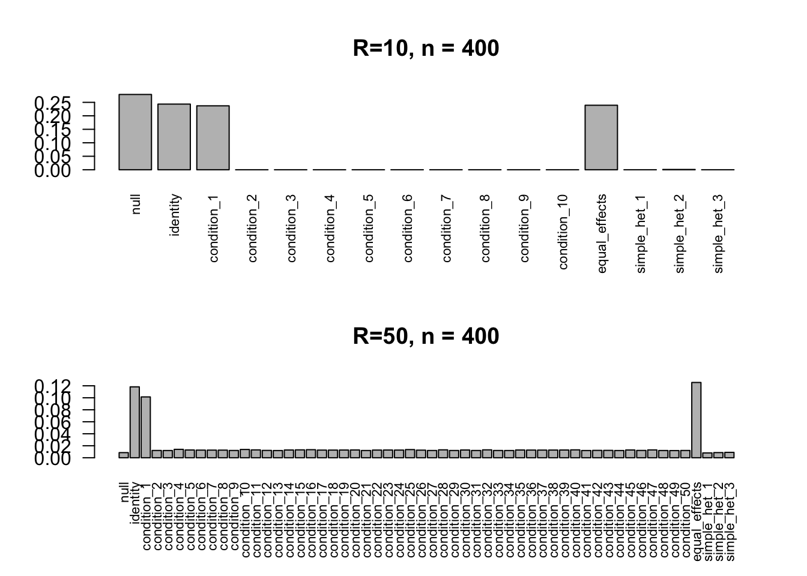
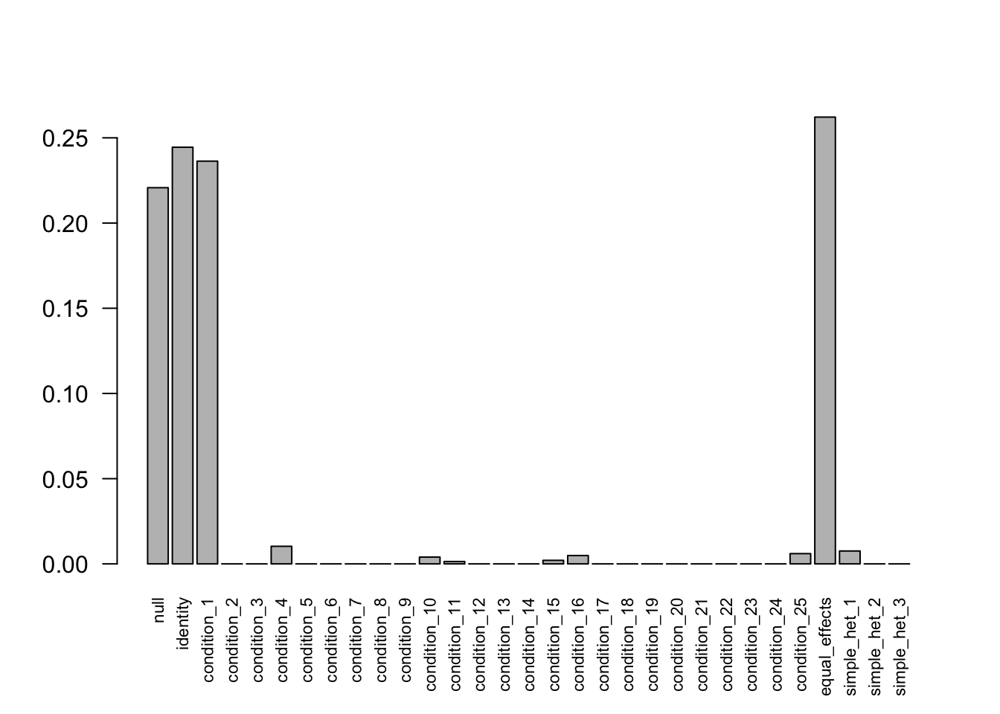

Last updated: 2018-03-05
Code version: 373cde0
We simulate dataset with N=400, R = 10 and 50.
library(mashr)Loading required package: ashrset.seed(2018)
data.10 = simple_sims(100, ncond = 10, err_sd = 0.1)
data.50 = simple_sims(100, ncond = 50, err_sd = 0.1)
mash.data.10 = mash_set_data(Bhat = data.10$Bhat, Shat = data.10$Shat)
mash.data.10.1 = mash_set_data(Bhat = data.10$Bhat, Shat = data.10$Shat, alpha=1)
mash.data.50 = mash_set_data(Bhat = data.50$Bhat, Shat = data.50$Shat)
mash.data.50.1 = mash_set_data(Bhat = data.50$Bhat, Shat = data.50$Shat, alpha=1)U.c.10 = cov_canonical(mash.data.10)
U.c.50 = cov_canonical(mash.data.50)
mash.10 = mash(mash.data.10, U.c.10, verbose = FALSE)Warning in REBayes::KWDual(A, rep(1, k), normalize(w), control = control): estimated mixing distribution has some negative values:
consider reducing rtolWarning in mixIP(matrix_lik = structure(c(0.825501423556077,
0.0919617211603192, : Optimization step yields mixture weights that are
either too small, or negative; weights have been corrected and renormalized
after the optimization.mash.50 = mash(mash.data.50, U.c.50, verbose = FALSE)Warning in REBayes::KWDual(A, rep(1, k), normalize(w), control = control): estimated mixing distribution has some negative values:
consider reducing rtolWarning in mixIP(matrix_lik = structure(c(0.0183400395288875,
0.0241762811815978, : Optimization step yields mixture weights that are
either too small, or negative; weights have been corrected and renormalized
after the optimization.par(mfcol=c(2,1))
barplot(get_estimated_pi(mash.10), las=2, cex.names = 0.7, main='R=10, n = 400')
barplot(get_estimated_pi(mash.50), las=2, cex.names = 0.7, main='R=50, n = 400')
par(mfcol=c(1,1))Separate the conditions to subgroups:
mash.data.50.sub1 = mash_set_data(data.50$Bhat[,1:25], data.50$Shat[,1:25])
U.c.50.sub1 = cov_canonical(mash.data.50.sub1)
mash.50.sub1 = mash(mash.data.50.sub1, U.c.50.sub1, verbose = FALSE)Warning in REBayes::KWDual(A, rep(1, k), normalize(w), control = control): estimated mixing distribution has some negative values:
consider reducing rtolWarning in mixIP(matrix_lik = structure(c(0.0183400395288872,
0.210931087030779, : Optimization step yields mixture weights that are
either too small, or negative; weights have been corrected and renormalized
after the optimization.barplot(get_estimated_pi(mash.50.sub1), las=2, cex.names = 0.7)
sessionInfo()R version 3.4.3 (2017-11-30)
Platform: x86_64-apple-darwin15.6.0 (64-bit)
Running under: macOS High Sierra 10.13.3
Matrix products: default
BLAS: /Library/Frameworks/R.framework/Versions/3.4/Resources/lib/libRblas.0.dylib
LAPACK: /Library/Frameworks/R.framework/Versions/3.4/Resources/lib/libRlapack.dylib
locale:
[1] en_US.UTF-8/en_US.UTF-8/en_US.UTF-8/C/en_US.UTF-8/en_US.UTF-8
attached base packages:
[1] stats graphics grDevices utils datasets methods base
other attached packages:
[1] mashr_0.2-6 ashr_2.2-7
loaded via a namespace (and not attached):
[1] Rcpp_0.12.15 knitr_1.20 magrittr_1.5
[4] REBayes_1.2 MASS_7.3-47 doParallel_1.0.11
[7] pscl_1.5.2 SQUAREM_2017.10-1 lattice_0.20-35
[10] foreach_1.4.4 plyr_1.8.4 stringr_1.3.0
[13] tools_3.4.3 parallel_3.4.3 grid_3.4.3
[16] rmeta_2.16 git2r_0.20.0 htmltools_0.3.6
[19] iterators_1.0.9 assertthat_0.2.0 yaml_2.1.17
[22] rprojroot_1.2 digest_0.6.13 Matrix_1.2-12
[25] codetools_0.2-15 evaluate_0.10.1 rmarkdown_1.8
[28] stringi_1.1.6 compiler_3.4.3 Rmosek_8.0.69
[31] backports_1.1.2 mvtnorm_1.0-7 truncnorm_1.0-8 This R Markdown site was created with workflowr